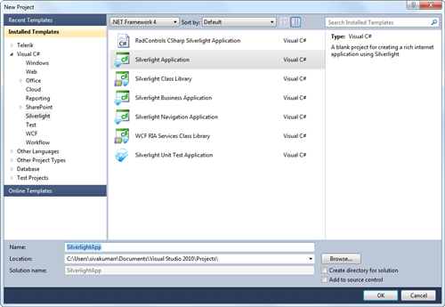
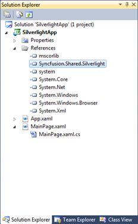
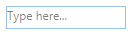

Steps to create MaskedTextBox by using Visual Studio in C# as follows:
1. Open Visual Studio, On the File menu click New -> Project. This opens the New Project Dialog box.

Figure 172: New Project Dialog box
2. Select Silverlight Application in the ProjectDialog window and type the name of the project in the name field.Click OK.

Figure 173: Select Silverlight Application
3. Add the following Reference with the sample project.
· Syncfusion.Shared.Silverlight.dll

Figure 174: Solution explorer
4. Click and open C# file.Add MaskedTextBox to your application.
|
C# |
|
MaskedTextBox maskedTextBox = new MaskedTextBox(); maskedTextBox.Height = 25; maskedTextBox.Width = 150; maskedTextBox.Mask = "00/00/0000"; |

Figure 175: MaskedTextBox
See Also